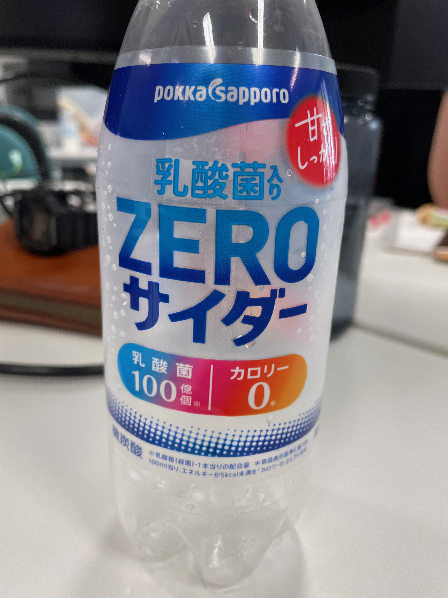

2024/05/12 晴れ
おいしいもの
てだこホール練習室前の自販機で買った乳酸菌入りサイダー。
ただの薄味のカルピスソーダなのだが
ゼロと書いてあるだけで罪悪感もゼロになるから不思議。
でもこのジャケットからは甘くない炭酸を期待するのでは、、、？
よく見ると「甘さしっかり」って書いてあるんだけどね。
（自分も無味の炭酸が飲みたくて買った）
短命に終わらないよう微力ながら買い支えようと思う。
ただの薄味のカルピスソーダなのだが
ゼロと書いてあるだけで罪悪感もゼロになるから不思議。

でもこのジャケットからは甘くない炭酸を期待するのでは、、、？
よく見ると「甘さしっかり」って書いてあるんだけどね。
（自分も無味の炭酸が飲みたくて買った）
短命に終わらないよう微力ながら買い支えようと思う。
今日の挑戦は背景画像！